Capítulo 3 Temas sociales
3.1 Conflicto y cohesión territorial
Chile es un país marcado por altos niveles de segregación espacial (Link, Valenzuela y Fuentes, 2015; Agostini et al, 2016; Garretón 2017), los cuales acarrean consigo importantes diferencias y desigualdades socioeconómicas entre diferentes zonas del país y también dentro de las distintas ciudades y territorios. Por ende, para entender fenómenos de conflicto y cohesión social, es importante considerar el nivel barrial, es decir, el nivel en que los/as chilenos/as perciben la existencia de problemas o conflictos con sus vecinos.
En este sentido, en la Figura 3.1 podemos ver los cambios en la frecuencia con la que los/as chilenos/as se han molestado o incomodado por problemas con sus vecinos a lo largo del tiempo. Por ejemplo, mientras en 2016, un 27.7% de los/as chilenos/as reporta nunca haber tenido problemas con sus vecinos, este valor se reduce a 23.5% el año de 2021. Por otro lado, también podemos ver un decrecimiento de personas que reportan haberse molestado o incomodado por problemas con sus vecinos “muchas veces o siempre” entre 2016 y 2021, años en los cuales estos porcentajes alcanzan 12.2% y 9.2% respectivamente. Así, la gran mayoría de personas reporta haberse incomodado o molestado “pocas o algunas veces” con sus vecinos a lo largo del tiempo, una cifra que alcanza su máximo valor el año 2021 con 67.3% de personas reportando problemas vecinales.
Figura 3.1: Porcentaje que presenta Molestia o incomodidad por problemas con sus vecinos, según ola de estudio

A su vez, en la Figura 3.2 podemos observar que, aunque los porcentajes de personas que reportan distintos niveles de conflicto no cambian considerablemente entre 2019 y 2021, si existen personas que cambian sus percepciones individuales de conflicto con sus vecinos en distintas direcciones, sea esto para menores niveles de conflicto pero también para niveles de conflicto más elevados. Por ejemplo, algunas personas que antes reportaban haber tenido “pocos o algunos” conflictos con vecinos, el año 2021 reportan “nunca” haberlos tenido, mientras que bastantes personas que habían reportado “nunca” haber tenido conflictos, en 2021 si reportan haberse sentido molestos o incomodados por problemas con sus vecinos “pocas o algunas veces.” Finalmente, del 10.3% de las personas que en 2019 reportaron tener problemas “muchas veces o siempre” con sus vecinos, cerca de la mitad reportan en 2021 una disminución de estos para “pocas o algunas veces.”
Figura 3.2: Cambios en frecuencia de conflictos barriales
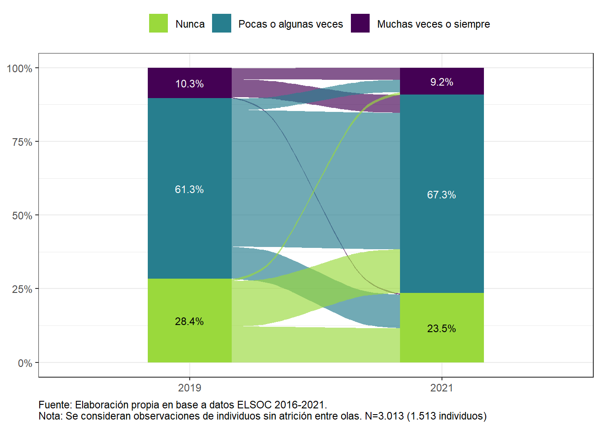En relación a la frecuencia de conflictos barriales, según la Figura 3.3, se puede observar que la Región Metropolitana concentra el porcentaje más elevado de conflictos, aunque haya una disminución de estos de un 15.8% durante el año 2019 para un 13.1% el año 2021. La Zona Sur es donde se reportan menos conflictos barriales, con un 2.7% el año 2019 y un 0.8% para el año 2021.
Figura 3.3: Porcentaje con alta frecuencia de conflictos barriales, según ola del estudio y zona geográfica
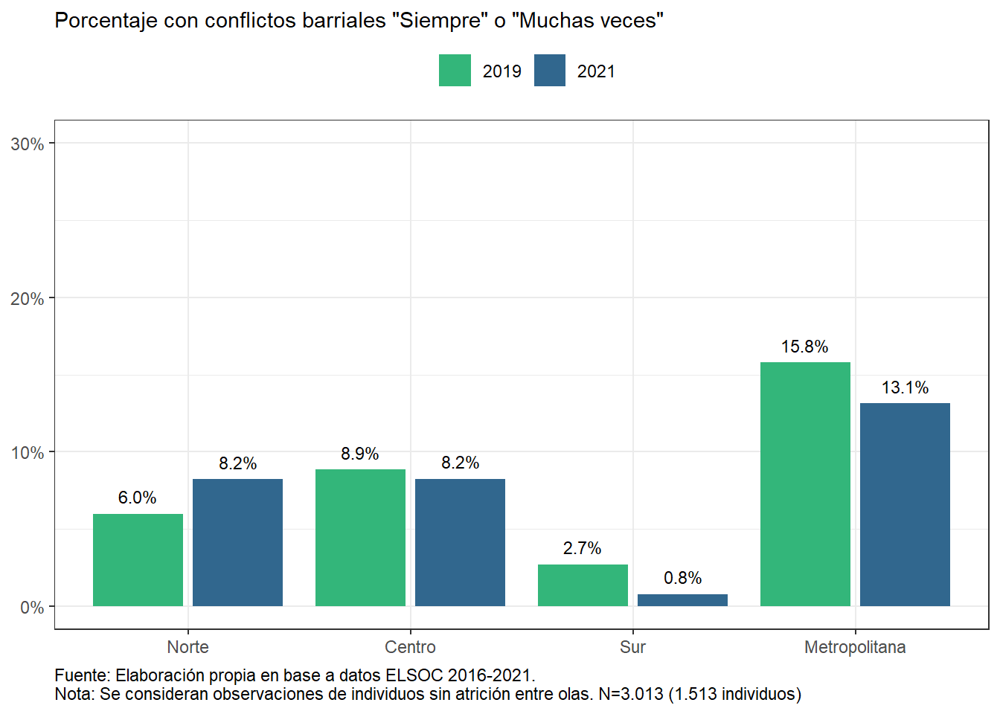Por otro lado, según la Figura 3.4, el porcentaje de personas que reporta tener conflictos barriales “muchas veces o siempre,” baja de un 17.5% a un 14,0% en la Región Metropolitana, un patrón similar al Gran Valparaíso donde el porcentaje también baja de un 9.0% a un 7.2% entre el año 2019 y el año 2021. Por otro lado, en el Gran Concepción, se registra un aumento de conflictos barriales frecuentes de un 4.1% a 6.5% , mientras en Ciudades Medianas,también hay un aumento de conflictos barriales de un 8.1% a 13.8% entre 2019 y 2021.
Figura 3.4: Porcentaje con alta frecuencia de conflictos barriales, según ola del estudio y zona de residencia
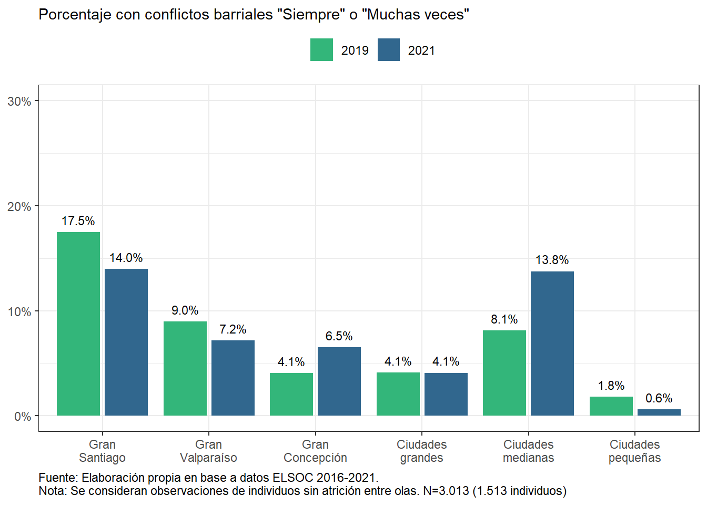Finalmente, en la Figura 3.5 se puede observar que el porcentaje de conflictos barriales es superior en el Quintil 1 de ingresos en comparación con los demás quintiles, siendo que un 17,0% de este Quintil reporta tener conflictos “muchas veces o siempre” en 2019 y un 16,7% en 2021. Es, además, el que se mantiene más estable. Entre 2019 y 2021 existe un decrecimiento de conflictos barriales en los Quintiles 2 y 3 de ingresos, al pasar de 13,3% y 12,4%, a 7,1% y 8,1%, respectivamente. En contraposición, los Quintiles 4 y 5 aumentan su frecuencia de conflictos barriales.
Figura 3.5: Porcentaje con alta frecuencia de conflictos barriales, según ola del estudio y quintil de ingreso

Confianza en vecinos
La confianza entre vecinos es un prerrequisito indispensable para la sustentabilidad y revitalización de los barrios (Downs, 1981, Varady,1986). La confianza entre residentes, está vinculada a la estabilidad residencial y mantenimiento de las infraestructuras del barrio, haciendo de este fenómeno un aspecto clave para pensar en programas de revitalización de barrios.
En esta línea, en la Figura 3.6 se puede observar una progresiva evolución de bastante o mucha confianza entre 2016 y 2018, para descender el 2019, y mantenerse relativamente estable el 2021 al 44,7% de bastante o mucha confianza. Por otro lado, no se observan diferencias sistemáticas a nivel temporal de la confianza en vecinos por género (ver Figura 3.7). A nivel macrozonal se puede apreciar en el norte, el sur y en la zona metropolitana un descenso de la confianza entre 2019 y 2021, no obstante en la zona centro se aprecia un leve aumento de la confianza (ver Figura 3.8).
Figura 3.6: Confianza en vecinos, según ola de estudio.

Figura 3.7: Confianza en vecinos, según sexo y ola del estudios
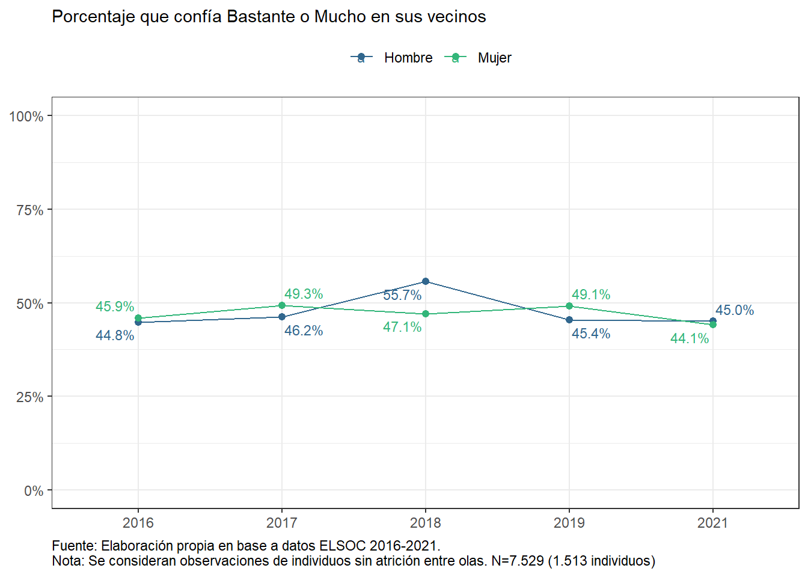Figura 3.8: Confianza en vecinos, según zona geográfica y ola del estudios

Un elemento importante a resaltar es como la confianza entre vecinos se va diferenciando temporalmente por quintiles de ingreso (Ver Figura 3.9). Si bien, el 2016 el quintil de más altos ingresos (Q5) con el de más bajos ingresos (Q1) obtienen porcentajes cercanos de confianza en los vecinos, se van distanciando en la medida de que avanza el tiempo. Por un lado los sectores de mayores ingresos van aumentando su confianza desde el 50,4% el 2016 hasta llegar al 59,1% para el 2021. Por otro lado los sectores de menores ingresos si bien entre 2016 y 2019 tienden a mantenerse relativamente estable alrededor del 42%, para el 2021 este porcentaje desciende al 37,2%. Estos resultados, como veremos más adelante, estarían indicando de un proceso de desigualdad que se va acumulando en la sociabilidad barrial (Mendez, et al. 2021).
Figura 3.9: Confianza en vecinos, según quintil de ingresos y ola del estudio

Vinculación de ELSOC a indicadores territoriales
Con el objetivo de enriquecer las variables de contexto territorial de los encuestados en ELSOC, se ha puesto a disposición de los investigadores estimaciones e indicadores territoriales y geoespaciales, estimados a nivel de las zonas censales donde residen, y que se pueden vincular directamente a las distintas rondas de la encuesta a través de su identificador de encuestado. Esta agregación geográfica de zonas censales, representa una buena aproximación de lo que las personas consideran su barrio y ha sido aceptada ampliamente por la literatura urbana (Flores, 2021; Link y Valenzuela, 2018).
Son indicadores territoriales que abordan dimensiones sociodemográficas, características de los hogares, migración, y vivienda, provenientes de distintas fuentes de información nacional, tales como, el Centro de Inteligencia Territorial (CIT), censo 2017 del Instituto Nacional de Estadísticas (INE) y variables sobre vivienda y edificación del INE y Ministerio de Vivienda y Urbanismo (MINVU). Con esta base de datos, única en su tipo en Chile y Latinoamérica, es posible abordar temas sociales y territoriales complejos, integrando ambos aspectos en modelos comprensivos de la realidad social chilena.
Los análisis que se presentan a continuación consideran indicadores territoriales construidos a partir de la información a nivel individual del censo 2017, agregada a nivel de zonas censales y vinculada a los encuestados de ELSOC según su lugar de residencia reportado en cada ronda. Dado que esta información territorial no varía en el tiempo, se realiza un análisis estático para el año 2021, analizando su relación con variables territoriales del 2017.
Según estudios empíricos, los factores más relevantes que afectarían a la cohesión social a nivel de barrio son la composición racial, educación, etnicidad y desigualdad económica (Abascal y Baldassarri, 2015; Neal, 2017). Con datos del censo 2017, se analiza si la escolaridad promedio del barrio y la tasa de inmigración están asociadas a los niveles de confianza con los vecinos en ELSOC.
Utilizando la información sobre la escolaridad promedio que exhibía en 2017 el barrio o zona censal de residencia de los encuestados, es posible generar quintiles de escolaridad promedio en el barrio. Entonces, Q1 representa el grupo de encuestados ELSOC que reside en los barrios de más baja escolaridad promedio, mientras que Q5 agrupa a los encuestados residentes en los barrios de más alta escolaridad promedio.
La Figura 3.10 muestra el porcentaje de encuestados que confía bastante o mucho en sus vecinos según quintiles de escolaridad promedio del barrio de residencia. Destaca el mayor porcentaje de encuestados en los barrios de más alta escolaridad promedio (Q5) que señala confiar bastante o mucho en sus vecinos. En efecto, éste alcanza un 50,0% frente a un 38,8% de encuestados residentes en los barrios de menor escolaridad promedio (Q1).
Este resultado es consistente con estudios previos que muestran que la cohesión social a nivel de barrio podría ser un privilegio de los niveles socioeconómicos más altos, especialmente en zonas con altos índices de segregación espacial por ingresos, como son las ciudades de Chile (Méndez et al., 2021).
Figura 3.10: Confianza en los vecinos, según quintil de escolaridad

Cuando se analiza a los encuestados ELSOC según la proporción de inmigrantes en la zona censal de residencia, se observa que una mayor tasa de inmigración en el barrio se asocia a niveles más bajos de confianza con los vecinos. Aquellos que residen en zonas con la menor tasa de inmigracción (Q1) exhiben un 38,5% de encuestados que confía bastante o mucho. En contraste, aquellos residentes en barrios con las más altas tasas de inmigración (Q5) exhiben un 32,9% de personas que confía bastante o mucho en sus vecinos.
Este resultado sugiere analizar los mecanismos de integración social de inmigrantes a nivel local, considerando las características específicas de cada barrio, en cuanto a su capacidad de acoger nuevas demandas por bienes y servicios sociales, así como también, las diferencias culturales y/o de lenguaje, para promover la cohesión social (McCue y Norris‐Tirrell, 2002).
Figura 3.11: Confianza en los vecinos, según quintil de proporción de inmigrantes

Frecuencia de visita a vecinos
El nivel de confianza en los vecinos no necesariamente está asociado a la existencia de interacciones explícitas o la conformación concreta de lazos sociales. En países altamente segregados, si los individuos se agrupan según sus características socioeconómicas, la homogeneidad existente dentro de un vecindario puede generar confianza, ya que, existiría una identidad implícita entre sí (Akerlof y Kranton, 2000; Owen, Videras y Wu, 2010).
Por lo tanto, resulta relevante analizar también la frecuencia de las interacciones con vecinos, ya que, es una de las dimensiones consideradas por la literatura para la conformación y fortaleza de los lazos sociales (Granovetter, 1973; Marsden y Campbell, 1984).
La Figura 3.12 presenta la dinámica en la frecuencia de visitas a vecinos a través de las cinco rondas de la encuesta. Se observa un aumento importante en el porcentaje de encuestados que nunca ha visitado a sus vecinos en 2021. Este porcentaje se había mantenido relativamente constante en torno al 30% entre 2016 y 2019, pero alcanzó un 39.1% en 2021. Este aumento proviene de la disminución de quienes visitaban a sus vecinos una o dos veces al año, ya que, el porcentaje de encuestados que visitaba más de dos veces se redujo muy levemente durante el periodo analizado, desde 37.5% en 2016 a 35.8% en 2021. Lo anterior respondería a las medidas de distanciamiento social impuestas por las autoridades sanitarias para enfrentar la pandemia por covid19.
Figura 3.12: Frecuencia de visita a vecinos, según ola de estudio
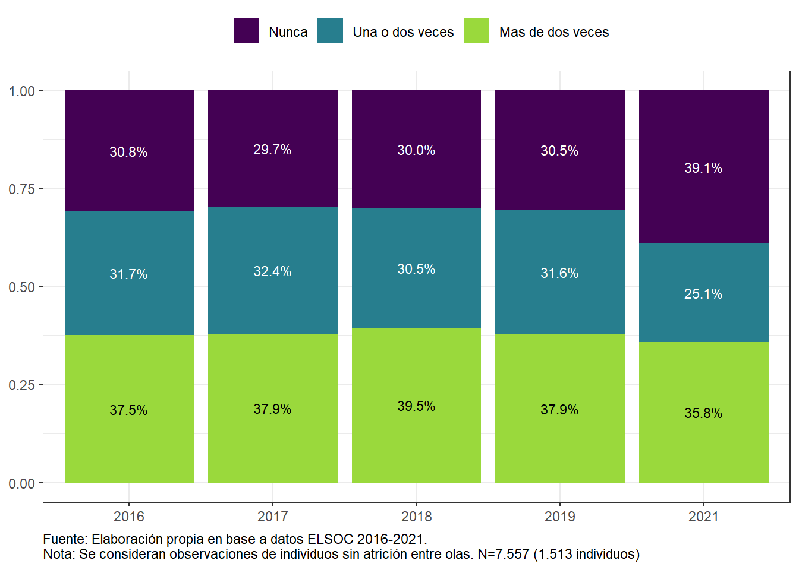Respecto a diferencias de género en interacciones sociales barriales, la Figura 3.13 muestra que, en todos los periodos previos a la pandemia por covid19 las mujeres exhiben un mayor porcentaje que visita a sus vecinos al menos una vez, respecto a los hombres. Para ellas, el porcentaje se mantuvo estable alrededor del 70% previo al 2020. Sin embargo, se redujo significativamente en 2021, alcanzando un 53%.
Por su parte, los hombres también disminuyeron el porcentaje que realiza visitas a sus vecinos, pero en menor medida que las mujeres, exhibiendo un 67% en 2016 y 61.4% en 2021. Este resultado indicaría que la pandemia también habría afectado más fuerte a las mujeres en términos de sus relaciones en el vecindario.
Figura 3.13: Frecuencia de visita vecinos, según sexo
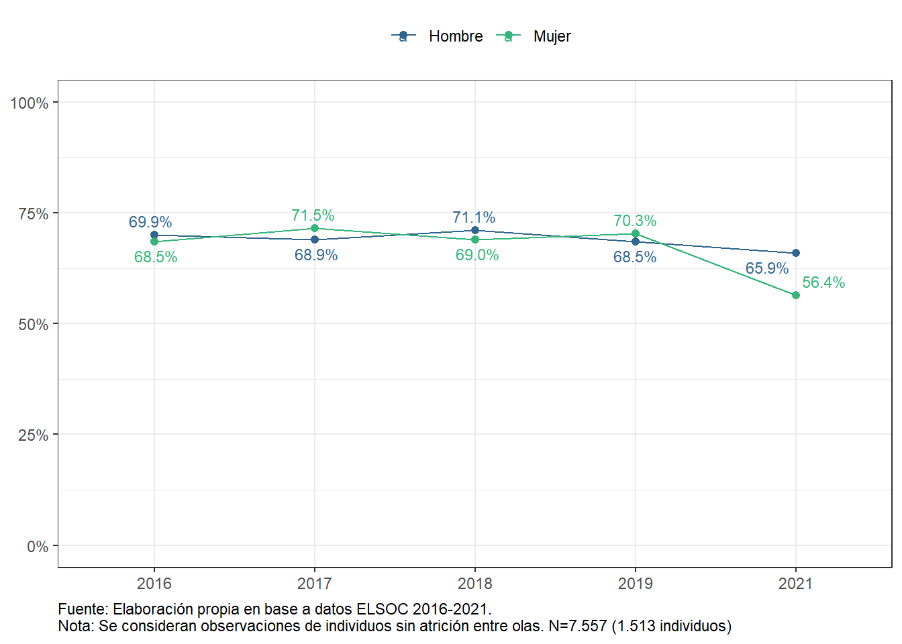El análisis territorial sobre la frecuencia de las interacciones sociales barriales según zonas del país, da cuenta de porcentajes similares de encuestados que visitan a sus vecinos al menos una vez al año, en el Gran Santiago, Gran Concepción y ciudades pequeñas. Solo desde 2019 en adelante las tendencias de las distintas zonas comienzan a mostrar diferencias entre sí, además de una disminución general de personas que visita a sus vecinos.
En efecto, en ciudades pequeñas el porcentaje que visita a sus vecinos disminuyó de 67.1% a 52.3% entre 2019 y 2021. En contraste, en el Gran Santiago, la caída fue desde 72.1% a 60.7% entre ambos periodos (Figura 3.14).
Figura 3.14: Frecuencia de visita vecinos, según estrato
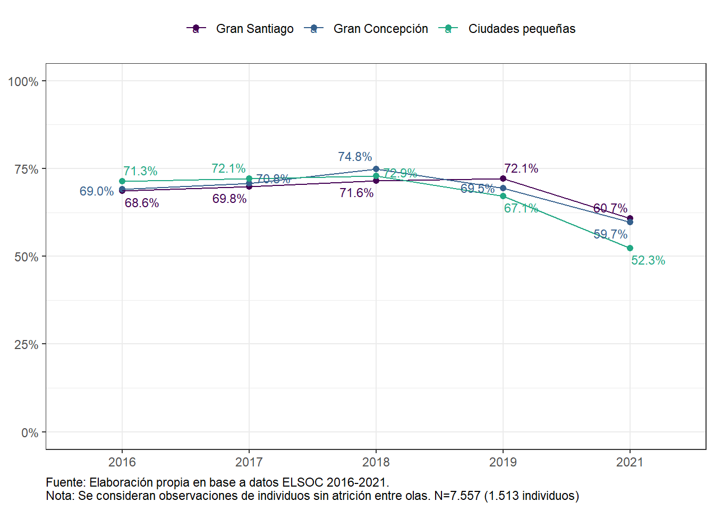Al desagregar la frecuencia de visitas a vecinos según quintiles de ingreso, se observa que, sistemáticamente, el quintil de mayores ingresos (Q5) presenta un mayor porcentaje de personas que visita a sus vecinos el menos una vez al año respecto al quintil de menores ingresos (Q1). Asimismo, se observa que la brecha entre ambos grupos se incrementó a partir de 2019. Se extrae de la Figura 3.15 una brecha de 6 puntos porcentuales a favor de Q5 en 2016, la cual aumenta a 10.4 puntos porcentuales en 2021.
No obstante, se debe señalar que, las interacciones sociales a nivel de barrio no necesariamente emergen en la vivienda de éstos. Es probable que en sectores vulnerables las interacciones se realicen en otros espacios, lo que no es capturado por este indicador.
Figura 3.15: Frecuencia de visita vecinos por quintil
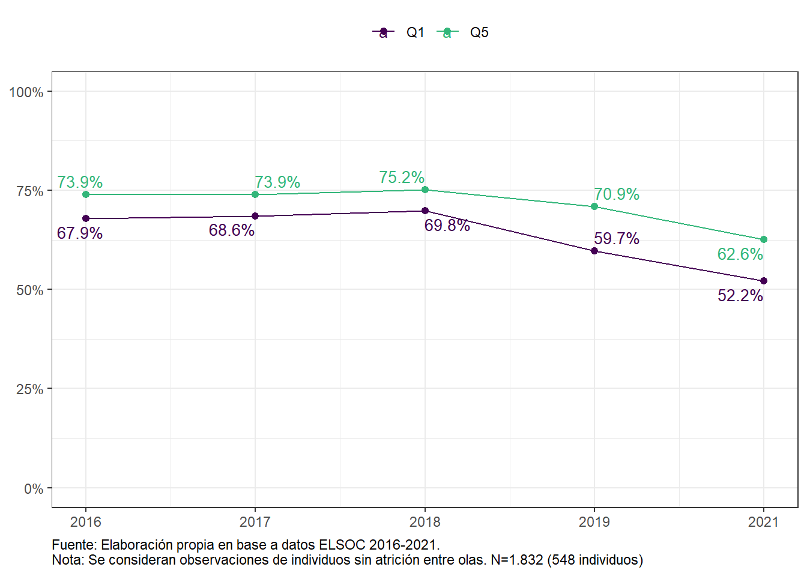La Figura 3.16 muestra el porcentaje de encuestados que señala una frecuencia de visitas a vecinos igual a “Lo hizo una o dos veces” más “Lo hizo mas de dos veces” desagregado según quintiles de escolaridad promedio del barrio de residencia. Este análisis es posible gracias a la vinculación de ELSOC con información sobre escolaridad de la población registrada en el censo 2017 del INE y agregada a nivel de zonas censales.
El grupo clasificado en el primer quintil de escolaridad promedio del barrio de residencia exhibe el menor porcentaje de encuestados que visita a sus vecinos (65.6%), seguido por el quinto quintil o de mayor escolaridad promedio del barrio de residencia (66.9%). Los quintiles intermedios, por su parte, rodean el 70% de encuestados que reporta visitar a sus vecinos.
Figura 3.16: Frecuencia de visita vecinos según quintil de escolaridad
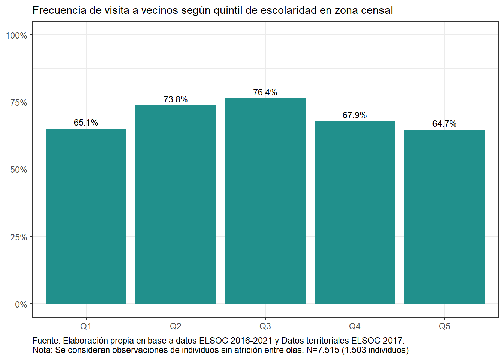Adicionalmente, al vincular la tasa de inmigración en el barrio de residencia desde el censo 2017 del INE y construir quintiles según esta variable, se observa que aquellos encuestados con la mayor tasa de inmigración (Q5) presentan el menor porcentaje que visita a sus vecinos (65.7%). Este porcentaje es menor a los exhibidos por encuestados que residen en zonas con menores tasas de inmigrantes, como el Q3 y el Q1 que presentan un 70.3% y 68.6%, respectivamente.
Figura 3.17: Frecuencia de visita a vecinos según quintil de inmigrantes
Seguridad barrial
La seguridad barrial tiene una importancia sustantiva en la medida de que permite comprender la evolución del bienestar social y económico, la calidad de vida en los barrios y su sustentabilidad en el tiempo (Brown, Brown y Perkins, 2004). Asimismo, empíricamente se ha demostrado que la seguridad barrial es un importante predictor del capital social (Curley, 2010). La Figura 3.18 muestra una tendencia decreciente en el porcentaje de encuestados que percibe a su barrio inseguro o muy inseguro hasta el año 2019. Luego, la tendencia se revierte con un porcentaje que aumenta desde 16.5% el 2019 a 19.4% el 2021. La crisis sanitaria y su consecuente crisis económica podría explicar este fenómeno.
Figura 3.18: Sensación de seguridad del barrio o vecindario, según ola del estudio.
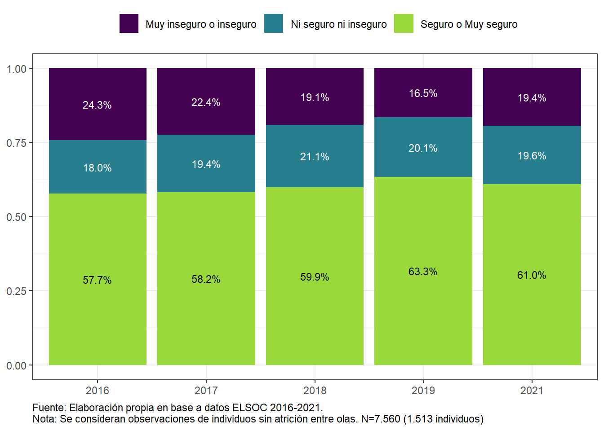Desde una perspectiva territorial, a lo largo de todo el periodo analizado es la Región Metropolitana la zona que sistemáticamente mantiene los mayores porcentajes de encuestados que se sienten inseguros o muy inseguros en su barrio. En la última ronda se observa un aumento de este porcentaje de 24.1% en 2019 a 28.3% en 2021.
La zona Norte exhibe una tendencia decreciente en el porcentaje de encuestados inseguros o muy inseguros, comenzando en 26.6% el 2016 y presentando un mínimo de 8.9% el 2019. Sin embargo, esta tendencia se revierte el 2021, alcanzando un 13.9%. Además de las crisis sanitaria, económica y política, podría estar afectando la crisis migratoria.
En las zonas Centro y Sur también se observa una tendencia decreciente en el porcentaje de encuestados inseguros o muy inseguros en su barrio. No obstante, este porcentaje aumenta levemente en el Sur considerando las últimas dos rondas (7.8% a 10.2%) y se mantiene constante en la zona Centro (Figura 3.19).
Figura 3.19: Sensación de inseguridad del barrio o vecindario de residencia, según ola del estudio y zona geográfica

En cuanto a la seguridad percibida en el barrio según educación, en la Figura 3.20 se observa que son los encuestados con educación Universitaria quienes más reducen su porcentaje de quienes se sienten inseguros o muy inseguros a lo largo del periodo, desde 21.4% en 2016 a 8.1% en 2021. Otros grupos, con menores niveles educativos se mantuvieron o aumentaron este porcentaje entre estallido social (2019) y pandemia por covid19 (2021). Este resultado es consistente con la teoría y estudios empíricos que señalan a la educación superior como factor protector, ya que, permite hacer frente a shocks negativos, como la pandemia por covid19 y su consecuente crisis económica (Delaney y Devereux, 2019)
Figura 3.20: Sensación de inseguridad del barrio o vecindario de residencia, según ola del estudio y nivel educacional
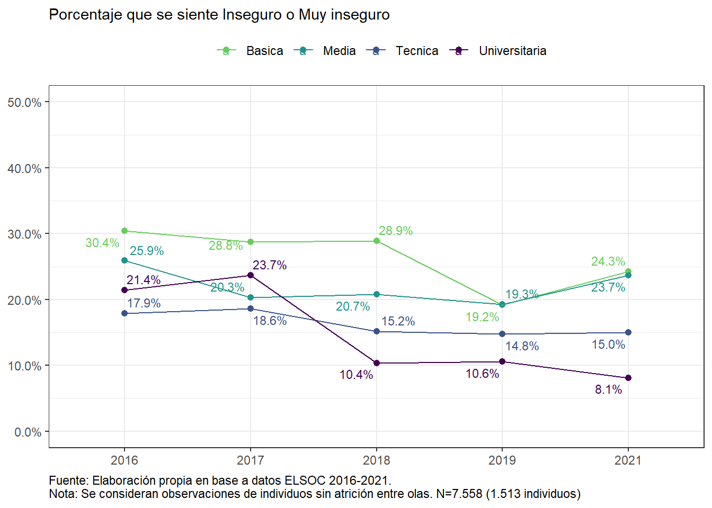La seguridad subjetiva en el barrio también varía según grupos de edad. Desde 2017, los adultos mayores con 65 años o más presentan el menor porcentaje de encuestados que se siente inseguro o muy inseguro en su barrio, respecto a grupos de menor edad. Además, es el único grupo etario que mantiene la tendencia decreciente durante todo el periodo, desde 21.6% en 2016 a 12.1% en 2021 (Figura 3.21).
Figura 3.21: Sensación de inseguridad del barrio o vecindario de residencia, según ola del estudio y tramo de edad
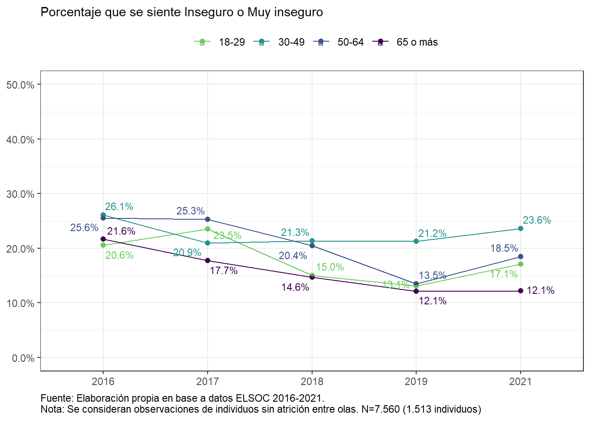Al analizar la seguridad subjetiva que reportan los encuestados respecto a su barrio de residencia, según quintiles de ingreso, la Figura 3.22 muestra una tendencia decreciente en el porcentaje que señala sentirse inseguro o muy inseguro
Figura 3.22: Sensación de inseguridad del barrio o vecindario de residencia, según ola del estudio y quintil de ingreso del hogar

Criminalidad barrial
El porcentaje que declara que ocurren crímenes muchas veces o siempre en el barrio de residencia se ha mantenido relativamente estable a través del tiempo, fluctuando entre 30.3% en 2016 y 28.6% en 2021, con leves aumentos o disminuciones entre dichos años (Figura 3.23)
Figura 3.23: ¿Con qué frecuencia se han producido crímenes (riñas, robos y tráfico de drogas) en su barrio?, según ola de estudio.

Al desagregar la frecuencia de ocurrencia de crímenes en el barrio según zonas del territorio nacional se observa un significativo aumento del porcentaje que declara que los crímenes en su barrio ocurren siempre o muchas veces en la zona Sur, esto es, un incremento desde 6.4% a 31.0% entre 2019 y 2021. En contraste, en las zonas Norte, Centro y Metropolitana, este porcentaje disminuyó (Figura 3.24).
Figura 3.24: ¿Con qué frecuencia se han producido crímenes (riñas, robos y tráfico de drogas) en su barrio?, según ola del estudio y zona geográfica

El análisis territorial por grandes ciudades indica que el porcentaje de encuestados declarando que los crímenes en su barrio ocurren siempre o muchas veces ha disminuido en el Gran Santiago, Gran Valparaíso y Gran Concepción entre el 2019 y 2021. Sin embargo, el Gran Santiago sigue siendo el territorio con el mayor porcentaje de personas que declaran esta alta frecuencia de crímenes barriales, alcanzando un 36.6% en 2021.
En otros territorios del país, tales como, ciudades grandes, medianas y pequeñas, los porcentajes de experiencias de criminalidad barrial que ocurren siempre o muchas veces han aumentado significativamente durante el periodo analizado. Destaca el incremento de más de 10 puntos porcentuales en ciudades pequeñas (Figura 3.25).
Figura 3.25: ¿Con qué frecuencia se han producido crímenes (riñas, robos y tráfico de drogas) en su barrio?, según ola del estudio y tipo de ciudad

El nivel de ingresos está asociado al nivel de seguridad en el barrio, ya que, zonas con más recursos posibilitan una mejor coordinación entre vecinos y la instalación de más y mejores elementos preventivos que disminuyen la victimización (Di Tella, Galiani y Schargrodsky, 2010).
Los resultados de ELSOC sugieren que, efectivamente, el quintil de ingresos de los encuestados está relacionado con la frecuencia de crímenes en el barrio. Sistemáticamente, quienes pertenecen al quintil de menores ingresos (Q1) exhiben un mayor porcentaje que declara una alta ocurrencia de crímenes (siempre o muchas veces) que aquellos que pertenecen al quintil de mayores ingresos (Q5). Adicionalmente, la brecha ha ido aumentando a través del tiempo. Hacia el año 2016, mientras el 17.9% del Q5 reportaba alta frecuencia de crímenes en su barrio, este porcentaje era 24.5% para el Q1. Luego, las tendencias divergen y en el año 2021, el Q1 presenta un 39.7% y el Q5 un 16.5%. Esto es, a lo largo del periodo analizado, se observa una disminución de la frecuencia de crímenes para los más ricos y un aumento para los más pobres de la población.
Figura 3.26: ¿Con qué frecuencia se han producido crímenes (riñas, robos y tráfico de drogas) en su barrio?, según ola del estudio y quintil de ingreso

3.2 Migración
Amenaza realista y amenaza simbólica respecto a inmigrantes
Como se ha descrito en la literatura, es muy común observar en distintos países que existen personas más abiertas o favorables a la inmigración y otras más resistentes. Muchas veces detrás de la resistencia, o a veces abierto rechazo por parte de sectores de la sociedad, existe la noción de amenaza. En la literatura se han identificado dos formas que puede adoptar la amenaza asociada a la llegada de inmigrantes. Por una parte, está la amenaza simbólica, que alude a la percepción o creencia en ciertos sectores de la sociedad que con la llegada de los inmigrantes se transformará la cultura local, o cambiará la identidad nacional, afectando los modos de vida y formas de ser. Por otra parte, la amenaza realista, por su parte alude a la creencia o percepción de que los inmigrantes competirán con los locales por recursos escasos, por ejemplo, que aumentará el desempleo, la delincuencia o el uso de recursos públicos destinados al cuidado de la salud o educación (Stephan y Stephan, 2000).
Tal como se observa en la figura 3.27, primero llama la atención que en general existen niveles relativamente altos de amenaza realista respecto de todos los grupos evaluados (peruanos, venezolanos y haitianos). En segundo lugar, estos niveles de amenaza son relativamente estables en el tiempo, exceptuando el caso de los peruanos que experimentó un aumento sustantivo desde el año 2019 al 2021 y una caída sustantiva, en torno a 10%, en el caso de los venezolanos en igual periodo.
Figura 3.27: Con la llegada de migrantes a Chile, está aumentando el desempleo", según ola y origen de migrantes

Al analizar los niveles de amenaza realista a lo largo del tiempo en distintas zonas geográficas del país (ver figura 3.28), se constata que el efecto del incremento en el caso de los migrantes peruanos fue particularmente pronunciado en las regiones del centro y metropolitana, y en la región sur-austral. De igual manera la mayor caída de los niveles de amenaza, en el caso de los venezolanos, en la zona sur-austral pasando de 71.1% un a un 38.2%
Figura 3.28: Con la llegada de migrantes a Chile, está aumentando el desempleo", según ola, zona y origen de migrantes

Respecto de los niveles de amenaza simbólica, en primer lugar llama la atención, que en términos absolutos ésta es más baja que los niveles de amenaza realista. Con excepción del año 2021, en que los niveles aumentan para el caso de los migrantes haitianos y peruanos, en general los niveles de amenaza simbólica han tendido a la baja. Por último, al igual que en el caso de la amenaza realista, los chilenos exhiben menores niveles de amenaza simbólica hacia los venezolanos.
Figura 3.29: “Con la llegada de migrantes, Chile está perdiendo su identidad,” según ola y origen de migrantes

Al analizar los niveles de amenaza simbólica a lo largo del tiempo en distintas zonas geográficas del país (ver figura 3.30), se constata una caída muy sustantiva de los niveles de amenaza entre el 2016 y el 2019 hacia los peruanos en el caso de la zona norte y centro sur. Aún así, este patrón se revierte en el caso de los peruano (en todas las zonas) y en menor medida en el caso de los haitianos en todas las zonas del país excepto en la zona sur/austral.
Figura 3.30: “Con la llegada de migrantes, Chile está perdiendo su identidad,” según ola, zona y origen de migrantes
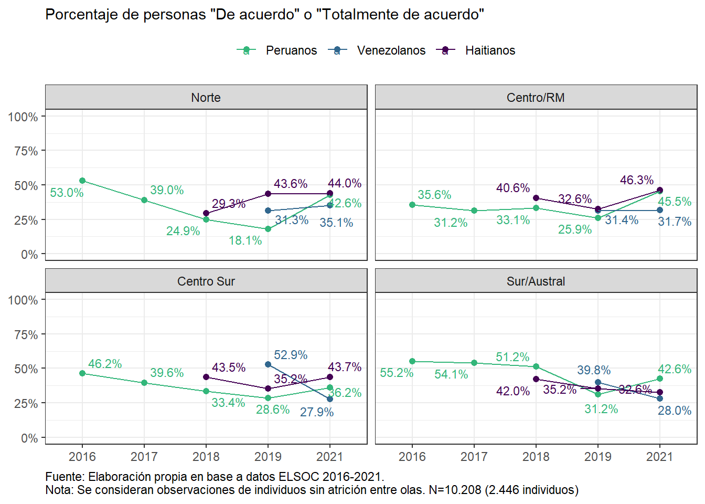Al analizar, los niveles de amenaza realista y simbólica para la quinta ola (año 2021) se observa que en general son los migrantes venezolanos quienes despiertan menores niveles de amenaza en la población chilena, en comparación a los migrantes haitianos y peruanos (ver Figura 3.31).
Figura 3.31: Percepción de amenaza realista y simbólica, según grupo de migrantes (2021)
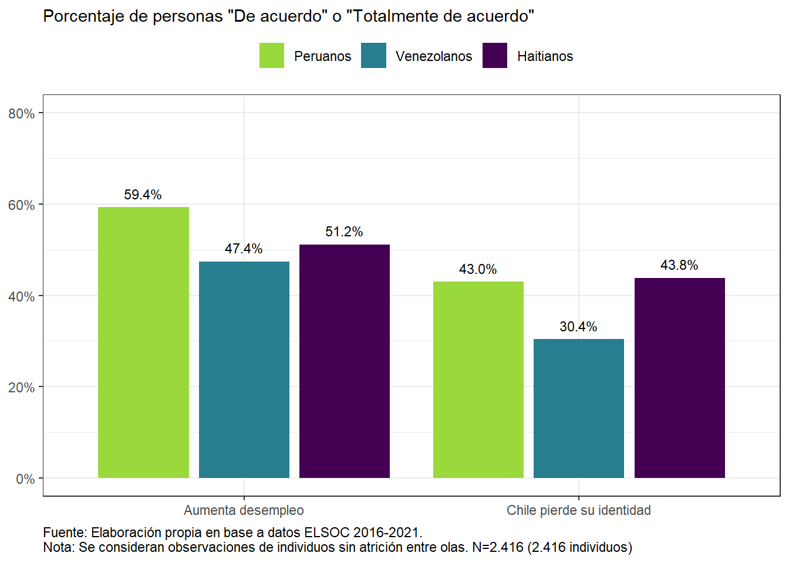Al analizar los niveles de amenaza en función de la escolaridad de los participantes del estudio (ver Figura 3.32), se constataron diferencias muy sustantivas entre los niveles más bajos de escolaridad y los más altos, llegando en torno a un 60,6% y 71,3% de amenaza simbólica y realista respectivamente en los grupos con menor escolaridad (educación básica) en comparación a los niveles observados en las personas que lograron educación universitaria completa o más, con un 19,1% y 25,6% amenaza simbólica y realista respectivamente.
Figura 3.32: Percepción de amenaza realista y simbólica respecto a inmigrantes, según nivel educacional (2021)
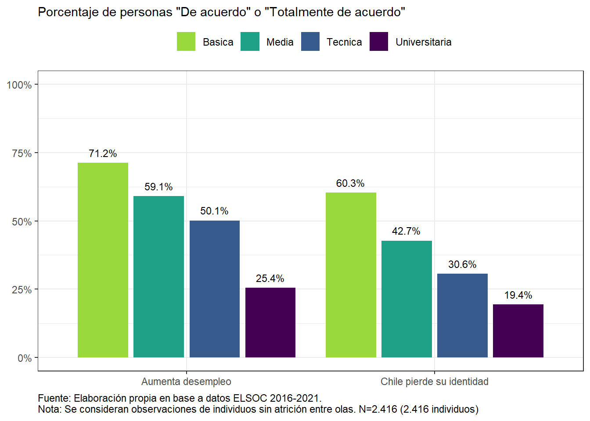Finalmente, al comparar los niveles de amenaza en función de la edad de los participantes, se puede observar que a medida que aumenta la edad también aumentan de manera sustantiva los niveles de amenaza tanto realista como simbólica (ver Figura 3.33). Personas entre 18 y 29 años exhiben un 33,9% de amenaza realista, mientras que las personas mayores de 65 años exhiben un 63% de este tipo de amenaza. Un patrón similar se observa para el caso de la amenaza simbólica (temor a perder la identidad nacional), donde personas entre 18 y 29 años exhiben un 25,9% de amenaza simbólica, mientras que las persona mayores de 65 años exhiben un 53% de este tipo de amenaza.
Figura 3.33: Percepción de amenaza realista y simbólica, según tramo de edad (2021)

Junto con evaluar los niveles de amenaza percibida realista y simbólica, ELSOC evaluó los niveles de confianza que despiertan en la población chilena los grupos migrantes evaluados. Tal como se puede apreciar en la Figura 3.34, los chilenos exhiben en general niveles relativamente bajos de confianza hacia los peruanos, venezolanos y haitianos (en torno al 25%) no observándose mayores variaciones entre los distintos grupos a lo largo del tiempo excepto en la última ola donde la confianza cae para todos los grupos (mayor desconfianza).
Figura 3.34: Confianza en migrantes, según ola y origen de migrantes
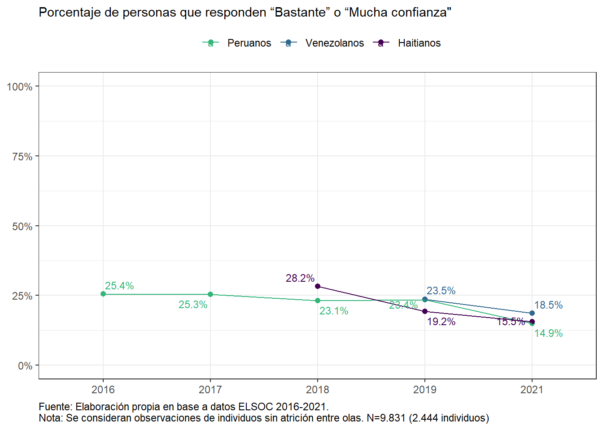Al desagregar los niveles de confianza según zona geográfica (Figura 3.35), se constata en primer lugar que en las zonas centro/región metropolitana y centro /sur se exhiben niveles establemente más bajos de confianza hacia todos los grupos migrantes, con una tendencia a una mayor caída especialmente en la RM. Contrario a este patrón, en la zona norte y austral se observan importantes variaciones a lo largo de los años y entre los grupos migrantes. Por ejemplo, es en la zona norte y austral donde se observan los niveles de mayor confianza en el caso de los peruanos pero con muchas fluctuaciones a lo largo de los años.
Figura 3.35: Confianza en migrantes, según ola, zona y origen de migrantes

3.3 Sexismo hostil y benevolente
Considerando la relevancia del cambio cultural en torno a las relaciones entre hombres y mujeres, así como la relevancia que ha tenido el movimiento feminista en los años recientes, ELSOC evaluó la vision que las personas tienen acerca de los roles que se esperan para hombres y mujeres. Dichos roles pueden reflejar una visión tradicional y estereotípica de los roles de género capturada en los niveles de sexismo exhibidos por los participantes. Al respecto, la literatura distingue, por un lado, el sexismo hostil que refiere a un prejuicio explícito hacia la mujer, en el que se asume que ésta es inferior al hombre y se la percibe de forma negativa (e.g., “Cuando las mujeres son derrotadas limpiamente, se quejan de discriminación”). Por otro lado, ELSOC evaluó el sexismo benevolente, que hace referencia a un tipo de prejuicio más sutil y que da cuenta de una actitud paternalista y de protección hacia la mujer, escondida tras una visión aparentemente positiva de ésta (e.g., “Las mujeres deberían ser protegidas y queridas por los hombres”).
Tal como lo muestra la figura 3.36 en general existen niveles más altos de sexismo benevolente que de seximo hostíl. Segundo, son los hombres, en comparación a las mujeres, quienes muestran mayores niveles de sexismo benevolente. Por ejemplo, en torno a un 73,4 % de los hombres (versus un 55,7% de las mujeres) considera que las mujeres son más refinadas que los hombres. Este efecto se exacerba cuando se constan altísimos niveles de acuerdo tanto en hombres como mujeres que las mujeres debieran “ser queridas y protegidas por los hombres,” revelando altos nivels de seximo benevolente, En el caso del sexismo hostil, se constatan leves diferencias entre hombres y mujeres, siendo en general homogéneamente alto para ambos sexos.
Al analizar los niveles de sexismo en función de la escolaridad de los participantes del estudio (ver Figura 3.37), se constataron diferencias muy sustantivas entre los niveles más bajos de escolaridad y los más altos. En los cuatro ítems evaluados, las personas con menor escolaridad exhiben mayores niveles de sexismo (hostil y benevolente) que las personas con niveles de escolaridad universitaria o más.
Figura 3.36: Sexismo benévolo y hostil, según sexo (2021).

Figura 3.37: Sexismo benévolo y hostil, según nivel educacional (2021)

3.4 Estatus subjetivo y Percepción de Mérito
Estatus subjetivo
Estudios previos han mostrado que las personas tienen una visión acerca del estatus subjetivo que ocupan en una sociedad determinada. Así, ellas pueden percibirse pertenecen a clases sociales bajas, medias o altas de la escala social. Lo interesante es que dicha pertenencia subjetiva tiene implicancias acerca de la distribución socioeconómica y expectativas de movilidad social. ELSOC ha evaluado en todas las mediciones, en qué lugar de una escala social se ubican los chilenos?, utilizando una pregunta ampliamente conocida en estudios de opinión pública: En nuestra sociedad, hay grupos que tienden a ubicarse en los niveles más altos y grupos que tienden a ubicarse en los niveles más bajos de la sociedad ¿Dónde se ubicaría usted?, considerando una escala de 1 a 10 posiciones posibles.
Como se puede observar en la figura 3.38, que resume el resultado del estatus subjetivo de los chilenos durante las cinco olas de ELSOC, en todas ellas los participantes tienden a considerarse de clase media, fluctuando entre un 57,1% en 2016 a un 63,8% en 2021. El autoposicionamiento en la parte baja o media baja de la escala social presenta sin embargo fluctuaciones. El 2016 y el 2019 fue de 25% aproximado, mientras que en los otros años (2017, 2018 y 2021) estuvo por debajo del 20%, siendo el año 2021 cuando una menor proporción de chilenos se ubica en esa posición (14,9%). Finalmente, el autoposicionamiento en la parte alta de la escala social tiende a ser estable entre los años 2016 y 2018 en torno al 19%, y muestra una fluctuación más marcada en los años 2019 y 2021, bajando a un 11,9% y luego subiendo a un 21,5%, respectivamente.
Figura 3.38: Clase social subjetiva, según ola de estudio

Al analizar los cambios del estatus social subjetivo entre olas, primero se constata que la mayoría de las personas que consideran pertenecer a la clase social media, tienden a mantenerse en la misma posición a lo largo de los años. Segundo, entre 2016 y 2019 se observa un importante flujo de cambio en el estatus subjetivo hacia abajo (de posición social alto hacia media y de posición social media hacía posición social baja), mientras que entre 2019 y 2021 el flujo de cambios en el estatus subjetivo se produce hacia arriba (de posición social baja hacia media y de posición social media hacía posición social alta). Tercero, es importante constatar que los cambios en el estatus subjetivo ocurren entre las posiciones cercanas, es decir, son muy pocos los casos en que se observan cambios entre extremos de la posición social subjetiva. Finalmente, es importante destacar que el grupo de personas que más experimenta cambios a lo largo del tiempo, y de manera ascendente, son aquellas que declaran pertenecer a clases sociales bajas y media baja.
Figura 3.39: Cambios de Clase social subjetiva entre 2016, 2019 y 2021

Al analizar la percepción de estatus subjetivo en función de los niveles de ingresos de los chilenos (medidos en quintiles), primero se constata que existe un patrón similar de respuestas en los primeros dos quintiles o grupos de menores ingresos, con una predominio en torno al 67% de las personas que se perciben de estatus social subjetivo medio (ver Figura 3.40). A partir del tercer quintil de ingresos y hasta llegar al más alto (Q5) se constata un aumento progresivo de la proporción de personas que se percibe como miembros de una clase social media alta y alta, siendo el grupo de mayores ingresos -quinto quintil- donde este alcanza un 42,0%. De hecho, es este último grupo el que mayor diferenciación presenta en su patrón de respuesta comparados con todos los otros grupos socioeconómicos. El patrón general muestra que hay cierta correspondencia entre la posición social objetiva (obtenida a partir de los ingresos per cápita del hogar) y la posición social subjetiva.
Figura 3.40: Clase social subjetiva, según quintiles de ingreso (2021)
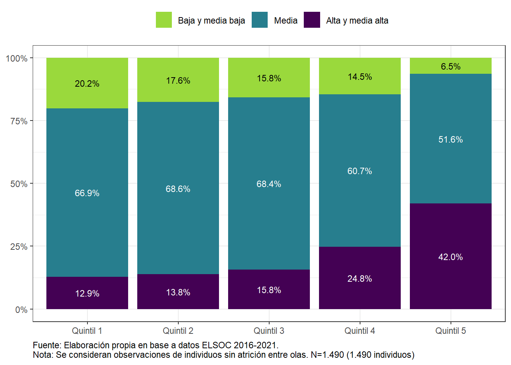Al analizar la expectativa de movilidad social que los participantes de ELSOC tienen respecto de sus hijos en el futuro (ver Figura 3.41), se constata una fuerte relación entre la percepción de clase social subjetiva declarada por los chilenos/as y la que proyectan para sus hijos/as. De esta manera, las personas que en la quinta ola perciben pertenecer a una clase social baja o media baja, piensan que un 44,1% de sus hijos pertenecerán en el futuro a una clase social media alta y alta. Este porcentaje aumenta muy sustantivamente llegando a un 68,4 % en el caso de quienes se perciben como de clase media y se empina a un 95,4% en el caso de las personas que piensan que ellas pertenecen a las clase social media alta y alta.
Figura 3.41: Si usted tiene actualmente hijos o si los tuviera en el futuro, ¿dónde cree usted que se ubicarían ellos?, según Clase social subjetiva (2021)

Al analizar la perspectiva de movilidad social medida como la diferencia entre el estatus social esperado para los hijos/as en el futuro y el que perciben los encuestas de sí mismos (ver Figura 3.42), se puede observar de manera sistemática a lo largo de las 5 olas del estudio que existe consensualmente una alta perspectiva de movilidad social ascendente en los chilenos/as (fluctuando entre un 78,5% en 2016 y un 74,8% en el 2021). En torno a un 20% de los participantes percibe inmovilidad social y un porcentaje menor de toda la muestra percibe movilidad descendente. Los resultados revelan en su conjunto las altas expectativas de movilidad social que la población chilena tiene de las futuras generaciones.
Figura 3.42: Perspectiva de movilidad social, según ola

El ideal meritocrático, entendido como la creencia de que las personas son recompensadas por el esfuerzo, ha sido un tema de alto interés en los años recientes. Como se observa en la figura 3.43, los chilenos consideran que para surgir en la vida sones altamente relevantes aspectos como el trabajo duro y la educación, lo que se considera como adherencia al ideal meritocrático (Maldonado, et al., 2019).. En contraste, los chilenos consideran que las recompensas que reciben al por su esfuerzo y por su inteligencia son más bien bajas. Es interesante constatar lo estable de este patrón a lo largo del tiempo, en donde se observan pequeñas fluctuaciones en los distintos años de ELSOC. Esto revela una alta adherencia al ideal meritocrático, reflejado en la idea de que las personas deberían ser recompensadas por su trabajo duro, en contraste con una menor percepción de que esto ocurre.
Figura 3.43: Percepción de importancia y recompensas del mérito, según ola de estudio
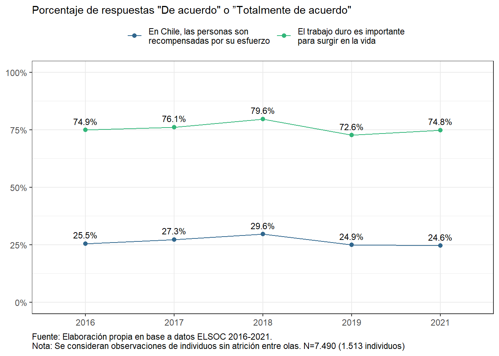